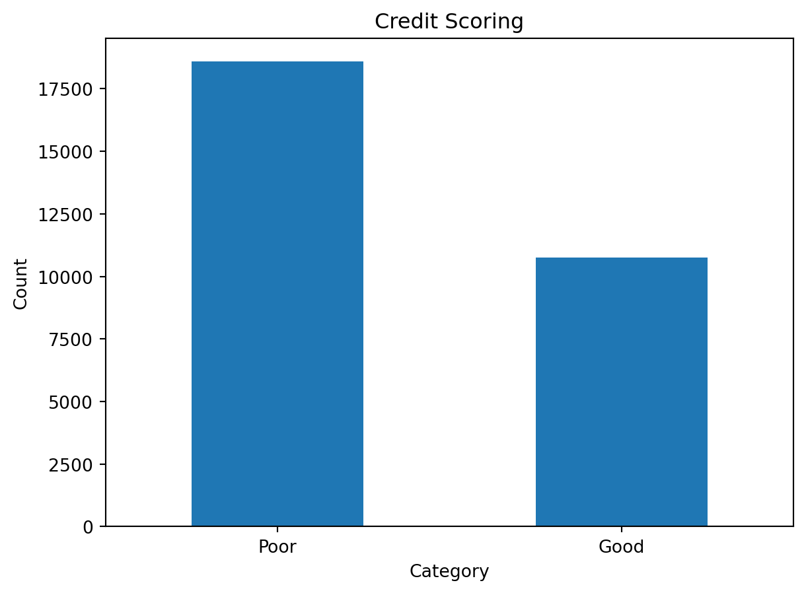

```{python}
import pandas as pd
import re
import numpy as np
from sklearn import preprocessing
from sklearn.preprocessing import scale
import os
import matplotlib.pyplot as plt
from sklearn.model_selection import train_test_split
import scipy.stats as stats
from sklearn.preprocessing import LabelEncoder, OneHotEncoder
```Introduction
In this project we applied 3 machine learning classification algorithms to build model to predict Credit scores. The dataset we used for this project is Credit scoring dataset from kaggle.
Importing Neccessary Libraries
Following libraries are used for this project
Dataset
Initial dimension of the data had 100’000 rows and 28 variables. After removing some unique identification variables we are going to work on are:
- “Month” - Month of the year
- “Age” - Age of the person, We limited it into 14+56
- “Occupation” - Occupation of the person, 16 factor
- “Annual_Income” - Annual income of the person, continuous variable
- “Monthly_Inhand_Salary” - Monthly salary, continuous variable
- “Num_Bank_Accounts” - Num of bank accounts the person holds
- “Num_Credit_Card” - Num of credit card the person holds
- “Interest_Rate” - Interest rate on credit card
- “Num_of_Loan” - Num of loans from the bank
- “Type_of_Loan” - Type of loan
- “Delay_from_due_date” - Average number of days delayed from the payment date
- “Num_of_Delayed_Payment” - Average number of payments delayed by a person
- “Changed_Credit_Limit” - Percentage change in credit card limit
- “Num_Credit_Inquiries” - number of credit card inquiries
- “Credit_Mix” - Classification of the mix of credits
- “Outstanding_Debt” - remaining debt to be paid (in USD)
- “Credit_Utilization_Ratio” - utilization ratio of credit card
- “Credit_History_Age” - age of credit history of the person
- “Payment_of_Min_Amount” - whether only the minimum amount was paid by the person
- “Total_EMI_per_month” - monthly EMI payments (in USD)
- “Amount_invested_monthly” - monthly amount invested by the customer (in USD)
- “Payment_Behaviour” - payment behavior of the customer
- “Monthly_Balance” - monthly balance amount of the customer (in USD)
- “Credit_Score” - bracket of credit score (Poor, Standard, Good)
Our target variable Credit_Score has 3 classes, but we only took “Poor” and “Good” categories to further analysis.
```{python}
#| warning: false
os.getcwd()
credit_score=pd.read_csv('train.csv')
credit_score=credit_score.drop(['ID','Name','SSN'], axis=1) # remove unnecessary unique identifier columns
credit_score=credit_score[credit_score.Credit_Score!='Standard'] # filter target variable and drop Standard category
print(credit_score.shape)
credit_score.head()
```(46826, 25)| Customer_ID | Month | Age | Occupation | Annual_Income | Monthly_Inhand_Salary | Num_Bank_Accounts | Num_Credit_Card | Interest_Rate | Num_of_Loan | ... | Credit_Mix | Outstanding_Debt | Credit_Utilization_Ratio | Credit_History_Age | Payment_of_Min_Amount | Total_EMI_per_month | Amount_invested_monthly | Payment_Behaviour | Monthly_Balance | Credit_Score | |
|---|---|---|---|---|---|---|---|---|---|---|---|---|---|---|---|---|---|---|---|---|---|
| 0 | CUS_0xd40 | January | 23 | Scientist | 19114.12 | 1824.843333 | 3 | 4 | 3 | 4 | ... | _ | 809.98 | 26.822620 | 22 Years and 1 Months | No | 49.574949 | 80.41529543900253 | High_spent_Small_value_payments | 312.49408867943663 | Good |
| 1 | CUS_0xd40 | February | 23 | Scientist | 19114.12 | NaN | 3 | 4 | 3 | 4 | ... | Good | 809.98 | 31.944960 | NaN | No | 49.574949 | 118.28022162236736 | Low_spent_Large_value_payments | 284.62916249607184 | Good |
| 2 | CUS_0xd40 | March | -500 | Scientist | 19114.12 | NaN | 3 | 4 | 3 | 4 | ... | Good | 809.98 | 28.609352 | 22 Years and 3 Months | No | 49.574949 | 81.699521264648 | Low_spent_Medium_value_payments | 331.2098628537912 | Good |
| 3 | CUS_0xd40 | April | 23 | Scientist | 19114.12 | NaN | 3 | 4 | 3 | 4 | ... | Good | 809.98 | 31.377862 | 22 Years and 4 Months | No | 49.574949 | 199.4580743910713 | Low_spent_Small_value_payments | 223.45130972736786 | Good |
| 4 | CUS_0xd40 | May | 23 | Scientist | 19114.12 | 1824.843333 | 3 | 4 | 3 | 4 | ... | Good | 809.98 | 24.797347 | 22 Years and 5 Months | No | 49.574949 | 41.420153086217326 | High_spent_Medium_value_payments | 341.48923103222177 | Good |
5 rows × 25 columns
Data Preprocessing
We prepared the data set for further analysis step by transforming character variables into categorical/factor variables, and numeric variables, treating missing values, and standardized it and treating outliers.
We have noticed there is some strange values like “_“,”!@9#%8”, “#F%$D@*&8” in dataset. You can check the coding part below for details.
```{python}
def replace_weird(credit_score): # create function for remove _ syntax
if credit_score is np.NaN or not isinstance(credit_score, str):
return credit_score
else:
return str(credit_score).strip('_ ,"')
credit_score = credit_score.applymap(replace_weird).replace(['', 'nan', '!@9#%8', '#F%$D@*&8'], np.NaN) # replace weird strings with na
```Treating Missing Data
Below we can see that there is quite many missing data in our dataset. Removing them would result significant drop in our number of datasets. So that we need to try treating it as much as we can.
```{python}
credit_score.isna().sum()
```Customer_ID 0
Month 0
Age 0
Occupation 3274
Annual_Income 0
Monthly_Inhand_Salary 7115
Num_Bank_Accounts 0
Num_Credit_Card 0
Interest_Rate 0
Num_of_Loan 0
Type_of_Loan 4780
Delay_from_due_date 0
Num_of_Delayed_Payment 3257
Changed_Credit_Limit 1000
Num_Credit_Inquiries 902
Credit_Mix 9491
Outstanding_Debt 0
Credit_Utilization_Ratio 0
Credit_History_Age 4206
Payment_of_Min_Amount 0
Total_EMI_per_month 0
Amount_invested_monthly 2155
Payment_Behaviour 3608
Monthly_Balance 595
Credit_Score 0
dtype: int64Below shows that we have dataset which includes credit scoring history of 8’692 unique customers January to August. Using Customer_Id, we can replace some feature’s missing value of certain customers, if other values are not missing.
```{python}
num_customer= len(set(credit_score["Customer_ID"] ))
print("Number of unique customer: ", num_customer)
num_month= set(credit_score["Month"] )
print("Number of month: ", num_month)
```Number of unique customer: 8692
Number of month: {'January', 'April', 'July', 'May', 'August', 'June', 'February', 'March'}For example, for Customer_ID=CUS_0x2dbc 3 of the value is missing. So instead of removing them we replaced the missing values with other most occured non missing value.
```{python}
credit_score[credit_score.Customer_ID=='CUS_0x2dbc'].groupby('Customer_ID')['Occupation'].apply(list)
```Customer_ID
CUS_0x2dbc [nan, Engineer, nan, Engineer, nan, Engineer]
Name: Occupation, dtype: objectAfter replacing the missiong value of occupation, above example looks like this.
```{python}
#| code-fold: false
credit_score['Occupation'] = credit_score['Occupation'].fillna(credit_score.groupby('Customer_ID')['Occupation'].transform(lambda x: x.fillna(stats.mode(x)[0][0])))
credit_score[credit_score.Customer_ID=='CUS_0x2dbc'].groupby('Customer_ID')['Occupation'].apply(list)
```/var/folders/6h/yr9vftfx0xv6rz2_sdjvz1180000gn/T/ipykernel_42703/3119726562.py:1: FutureWarning:
Unlike other reduction functions (e.g. `skew`, `kurtosis`), the default behavior of `mode` typically preserves the axis it acts along. In SciPy 1.11.0, this behavior will change: the default value of `keepdims` will become False, the `axis` over which the statistic is taken will be eliminated, and the value None will no longer be accepted. Set `keepdims` to True or False to avoid this warning.
/var/folders/6h/yr9vftfx0xv6rz2_sdjvz1180000gn/T/ipykernel_42703/3119726562.py:1: DeprecationWarning:
Support for non-numeric arrays has been deprecated as of SciPy 1.9.0 and will be removed in 1.11.0. `pandas.DataFrame.mode` can be used instead, see https://pandas.pydata.org/docs/reference/api/pandas.DataFrame.mode.html.
Customer_ID
CUS_0x2dbc [nan, Engineer, nan, Engineer, nan, Engineer]
Name: Occupation, dtype: objectWith this method we also replaced missing values of categorical variables, Credit_Mix, Payment_Behaviour, Type_of_Loan.
```{python}
credit_score['Credit_Mix'] = credit_score['Credit_Mix'].fillna(credit_score.groupby('Customer_ID')['Credit_Mix'].transform(lambda x: x.fillna(stats.mode(x)[0][0])))
credit_score['Payment_Behaviour'] = credit_score['Payment_Behaviour'].fillna(credit_score.groupby('Customer_ID')['Payment_Behaviour'].transform(lambda x: x.fillna(stats.mode(x)[0][0])))
credit_score['Type_of_Loan'] = credit_score['Type_of_Loan'].fillna(credit_score.groupby('Customer_ID')['Type_of_Loan'].transform(lambda x: x.fillna(stats.mode(x)[0][0])))
# for credit history age we replaced with pervious or next month's value
credit_score['Credit_History_Age'] = credit_score.groupby('Customer_ID')['Credit_History_Age'].apply(lambda x: x.interpolate().bfill().ffill())
```/var/folders/6h/yr9vftfx0xv6rz2_sdjvz1180000gn/T/ipykernel_42703/3462292945.py:1: FutureWarning:
Unlike other reduction functions (e.g. `skew`, `kurtosis`), the default behavior of `mode` typically preserves the axis it acts along. In SciPy 1.11.0, this behavior will change: the default value of `keepdims` will become False, the `axis` over which the statistic is taken will be eliminated, and the value None will no longer be accepted. Set `keepdims` to True or False to avoid this warning.
/var/folders/6h/yr9vftfx0xv6rz2_sdjvz1180000gn/T/ipykernel_42703/3462292945.py:1: DeprecationWarning:
Support for non-numeric arrays has been deprecated as of SciPy 1.9.0 and will be removed in 1.11.0. `pandas.DataFrame.mode` can be used instead, see https://pandas.pydata.org/docs/reference/api/pandas.DataFrame.mode.html.
/var/folders/6h/yr9vftfx0xv6rz2_sdjvz1180000gn/T/ipykernel_42703/3462292945.py:2: FutureWarning:
Unlike other reduction functions (e.g. `skew`, `kurtosis`), the default behavior of `mode` typically preserves the axis it acts along. In SciPy 1.11.0, this behavior will change: the default value of `keepdims` will become False, the `axis` over which the statistic is taken will be eliminated, and the value None will no longer be accepted. Set `keepdims` to True or False to avoid this warning.
/var/folders/6h/yr9vftfx0xv6rz2_sdjvz1180000gn/T/ipykernel_42703/3462292945.py:2: DeprecationWarning:
Support for non-numeric arrays has been deprecated as of SciPy 1.9.0 and will be removed in 1.11.0. `pandas.DataFrame.mode` can be used instead, see https://pandas.pydata.org/docs/reference/api/pandas.DataFrame.mode.html.
/var/folders/6h/yr9vftfx0xv6rz2_sdjvz1180000gn/T/ipykernel_42703/3462292945.py:3: FutureWarning:
Unlike other reduction functions (e.g. `skew`, `kurtosis`), the default behavior of `mode` typically preserves the axis it acts along. In SciPy 1.11.0, this behavior will change: the default value of `keepdims` will become False, the `axis` over which the statistic is taken will be eliminated, and the value None will no longer be accepted. Set `keepdims` to True or False to avoid this warning.
/var/folders/6h/yr9vftfx0xv6rz2_sdjvz1180000gn/T/ipykernel_42703/3462292945.py:3: DeprecationWarning:
Support for non-numeric arrays has been deprecated as of SciPy 1.9.0 and will be removed in 1.11.0. `pandas.DataFrame.mode` can be used instead, see https://pandas.pydata.org/docs/reference/api/pandas.DataFrame.mode.html.
/var/folders/6h/yr9vftfx0xv6rz2_sdjvz1180000gn/T/ipykernel_42703/3462292945.py:5: FutureWarning:
Not prepending group keys to the result index of transform-like apply. In the future, the group keys will be included in the index, regardless of whether the applied function returns a like-indexed object.
To preserve the previous behavior, use
>>> .groupby(..., group_keys=False)
To adopt the future behavior and silence this warning, use
>>> .groupby(..., group_keys=True)
As for numerical variables, we take average of other non missing values.
```{python}
credit_score[credit_score.Customer_ID=='CUS_0x1018'].groupby('Customer_ID')['Num_of_Delayed_Payment'].apply(list)
```Customer_ID
CUS_0x1018 [22, 22, 22, 20, nan, 22, 22, 22]
Name: Num_of_Delayed_Payment, dtype: objectAfter replacing the missiong value of Num_of_Delayed_Payment, above example looks like this.
```{python}
#| code-fold: false
credit_score['Num_of_Delayed_Payment'] = credit_score['Num_of_Delayed_Payment'].fillna(credit_score.groupby('Customer_ID')['Num_of_Delayed_Payment'].transform(lambda x: x.fillna(x.astype('float64').mean())))
credit_score[credit_score.Customer_ID=='CUS_0x1018'].groupby('Customer_ID')['Num_of_Delayed_Payment'].apply(list)
```Customer_ID
CUS_0x1018 [22, 22, 22, 20, 21.714285714285715, 22, 22, 22]
Name: Num_of_Delayed_Payment, dtype: objectAnd with this method, we do same for Monthly_Inhand_Salary, Changed_Credit_Limit, Num_Credit_Inquiries, Amount_invested_monthly, Monthly_Balance variables.
```{python}
credit_score['Monthly_Inhand_Salary'] = credit_score['Monthly_Inhand_Salary'].fillna(credit_score.groupby('Customer_ID')['Monthly_Inhand_Salary'].transform(lambda x: x.fillna(x.astype('float64').mean())))
credit_score['Changed_Credit_Limit'] = credit_score['Changed_Credit_Limit'].fillna(credit_score.groupby('Customer_ID')['Changed_Credit_Limit'].transform(lambda x: x.fillna(x.astype('float64').mean())))
credit_score['Num_Credit_Inquiries'] = credit_score['Num_Credit_Inquiries'].fillna(credit_score.groupby('Customer_ID')['Num_Credit_Inquiries'].transform(lambda x: x.fillna(x.mean())))
credit_score['Amount_invested_monthly'] = credit_score['Amount_invested_monthly'].fillna(credit_score.groupby('Customer_ID')['Amount_invested_monthly'].transform(lambda x: x.fillna(x.astype('float64').mean())))
credit_score['Monthly_Balance'] = credit_score['Monthly_Balance'].fillna(credit_score.groupby('Customer_ID')['Monthly_Balance'].transform(lambda x: x.fillna(x.astype('float64').mean())))
```After missing value treatment we have now left with very few missing value.
```{python}
credit_score.isna().sum()
```Customer_ID 0
Month 0
Age 0
Occupation 158
Annual_Income 0
Monthly_Inhand_Salary 85
Num_Bank_Accounts 0
Num_Credit_Card 0
Interest_Rate 0
Num_of_Loan 0
Type_of_Loan 4780
Delay_from_due_date 0
Num_of_Delayed_Payment 33
Changed_Credit_Limit 6
Num_Credit_Inquiries 5
Credit_Mix 1629
Outstanding_Debt 0
Credit_Utilization_Ratio 0
Credit_History_Age 47
Payment_of_Min_Amount 0
Total_EMI_per_month 0
Amount_invested_monthly 19
Payment_Behaviour 748
Monthly_Balance 9
Credit_Score 0
dtype: int64Data type
Here we are converting variables into suitable data types numeric or categorical.
```{python}
credit_score["Month"] = credit_score["Month"].astype("category")
credit_score['Age']=credit_score['Age'].astype('int')
credit_score.Occupation=credit_score.Occupation.astype('category')
credit_score.Annual_Income=credit_score.Annual_Income.astype('float')
credit_score.Monthly_Inhand_Salary=credit_score.Monthly_Inhand_Salary.astype('float')
credit_score.Num_Bank_Accounts=credit_score.Num_Bank_Accounts.astype('float')
credit_score.Num_Credit_Card=credit_score.Num_Credit_Card.astype('float')
credit_score.Interest_Rate=credit_score.Interest_Rate.astype('float')
credit_score.Num_of_Loan=credit_score.Num_of_Loan.astype('int')
credit_score.Num_of_Delayed_Payment=credit_score.Num_of_Delayed_Payment.astype('float')
credit_score.Changed_Credit_Limit=pd.to_numeric(credit_score.Changed_Credit_Limit, errors='coerce')
credit_score.Num_Credit_Inquiries=pd.to_numeric(credit_score.Num_Credit_Inquiries, errors='coerce')
credit_score.Credit_Mix=credit_score.Credit_Mix.astype('category')
credit_score.Outstanding_Debt=pd.to_numeric(credit_score.Outstanding_Debt, errors='coerce')
credit_score.Payment_of_Min_Amount=credit_score.Payment_of_Min_Amount.astype('category')
credit_score.Amount_invested_monthly=pd.to_numeric(credit_score.Amount_invested_monthly, errors='coerce')
credit_score.Credit_Score=credit_score.Credit_Score.astype('category')
credit_score.Monthly_Balance=pd.to_numeric(credit_score.Monthly_Balance, errors='coerce')
```Outlier Values
We check each numeric values if there is any outliers or wrong values by drawing the histogram of it and treat it individually. We clearly see that in Age, Annual_Income, Num_Bank_Account, Num_Credit_Card, Interest_Rate, Num_of_Loan, Num_of_Delayed_Payment, Num_Credit_Inquiries, Total_EMI_per_month, Amount_invested_monthly, Monthly_Balance has outliers or wrong values in it. We will fix it by using 1 and 3rd quantiles to make outlier values NAN and treat it same as the missing values.
```{python}
#| warning: false
fig, axis = plt.subplots(4, 4, figsize=(10,10))
credit_score.hist(ax=axis, color = "mediumturquoise", edgecolor="white" , grid=False)
plt.show()
```
To get 1st and 3rd quantiles we will use below function.
```{python}
#| code-fold: false
def get_1_3_qr(credit_score, column, multiply=1.5):
q1 = credit_score[column].quantile(0.25)
q3 = credit_score[column].quantile(0.75)
iqr = q3 -q1
lower = q1-iqr*multiply
upper = q3+iqr*multiply
print('Outlier band of', column, ":", lower, ";", upper)
```For age, we can tell than below 0 and above 67 should be outlier value and we make such value NAN and then treat it same as we did for missing values.
```{python}
#| code-fold: false
get_1_3_qr(credit_score, 'Age', multiply=1.5)
credit_score['Age']=credit_score['Age'].apply(lambda x: np.NaN if ((x<0)|(x>67)) else x)
credit_score['Age'] = credit_score['Age'].fillna(credit_score.groupby('Customer_ID')['Age'].transform(lambda x: x.fillna(x.astype('float64').mean())))
plt.hist(credit_score.Age, color = "mediumturquoise", edgecolor="white")
plt.show()
```Outlier band of Age : -3.0 ; 69.0
And we fixed the other variables with outliers using the same method.
- First identifying outlier bands:
```{python}
get_1_3_qr(credit_score, 'Annual_Income', multiply=1.5)
get_1_3_qr(credit_score, 'Num_Bank_Accounts', multiply=1.5)
get_1_3_qr(credit_score, 'Num_Credit_Inquiries', multiply=1.5)
get_1_3_qr(credit_score, 'Interest_Rate', multiply=1.5)
get_1_3_qr(credit_score, 'Num_of_Loan', multiply=1.5)
get_1_3_qr(credit_score, 'Num_of_Delayed_Payment', multiply=1.5)
get_1_3_qr(credit_score, 'Num_Credit_Card', multiply=1.5)
get_1_3_qr(credit_score, 'Total_EMI_per_month', multiply=1.5)
get_1_3_qr(credit_score, 'Amount_invested_monthly', multiply=1.5)
get_1_3_qr(credit_score, 'Monthly_Balance', multiply=1.5)
```Outlier band of Annual_Income : -59336.89750000001 ; 149059.0425
Outlier band of Num_Bank_Accounts : -4.5 ; 15.5
Outlier band of Num_Credit_Inquiries : -7.5 ; 20.5
Outlier band of Interest_Rate : -18.5 ; 49.5
Outlier band of Num_of_Loan : -4.0 ; 12.0
Outlier band of Num_of_Delayed_Payment : -8.5 ; 35.5
Outlier band of Num_Credit_Card : -0.5 ; 11.5
Outlier band of Total_EMI_per_month : -170.8962565708198 ; 373.8051122659707
Outlier band of Amount_invested_monthly : -219.46674583295186 ; 565.4620842502486
Outlier band of Monthly_Balance : -21.159846598012678 ; 744.2067826197436- Then replacing outlier variables with NAN:
```{python}
credit_score['Annual_Income']=credit_score['Annual_Income'].apply(lambda x: np.NaN if ((x<0)|(x>149060)) else x)
credit_score['Num_Bank_Accounts']=credit_score['Num_Bank_Accounts'].apply(lambda x: np.NaN if ((x<0)|(x>16)) else x)
credit_score['Num_Credit_Inquiries']=credit_score['Num_Credit_Inquiries'].apply(lambda x: np.NaN if ((x<0)|(x>21)) else x)
credit_score['Interest_Rate']=credit_score['Interest_Rate'].apply(lambda x: np.NaN if ((x<0)|(x>50)) else x)
credit_score['Num_of_Loan']=credit_score['Num_of_Loan'].apply(lambda x: np.NaN if ((x<0)|(x>12)) else x)
credit_score['Num_of_Delayed_Payment']=credit_score['Num_of_Delayed_Payment'].apply(lambda x: np.NaN if ((x<0)|(x>36)) else x)
credit_score['Num_Credit_Card']=credit_score['Num_Credit_Card'].apply(lambda x: np.NaN if ((x<0)|(x>12)) else x)
credit_score['Total_EMI_per_month']=credit_score['Total_EMI_per_month'].apply(lambda x: np.NaN if ((x<0)|(x>374)) else x)
credit_score['Amount_invested_monthly']=credit_score['Amount_invested_monthly'].apply(lambda x: np.NaN if ((x<0)|(x>567)) else x)
credit_score['Monthly_Balance']=credit_score['Monthly_Balance'].apply(lambda x: np.NaN if (x<0) else x)
```- Next we replace with mean value of each customers:
```{python}
credit_score['Annual_Income'] = credit_score['Annual_Income'].fillna(credit_score.groupby('Customer_ID')['Annual_Income'].transform(lambda x: x.fillna(x.astype('float64').mean())))
credit_score['Num_Bank_Accounts'] = credit_score['Num_Bank_Accounts'].fillna(credit_score.groupby('Customer_ID')['Num_Bank_Accounts'].transform(lambda x: x.fillna(x.astype('float64').mean())))
credit_score['Num_Credit_Inquiries'] = credit_score['Num_Credit_Inquiries'].fillna(credit_score.groupby('Customer_ID')['Num_Credit_Inquiries'].transform(lambda x: x.fillna(x.astype('float64').mean())))
credit_score['Interest_Rate'] = credit_score['Interest_Rate'].fillna(credit_score.groupby('Customer_ID')['Interest_Rate'].transform(lambda x: x.fillna(x.astype('float64').mean())))
credit_score['Num_of_Loan'] = credit_score['Num_of_Loan'].fillna(credit_score.groupby('Customer_ID')['Num_of_Loan'].transform(lambda x: x.fillna(x.astype('float64').mean())))
credit_score['Num_of_Delayed_Payment'] = credit_score['Num_of_Delayed_Payment'].fillna(credit_score.groupby('Customer_ID')['Num_of_Delayed_Payment'].transform(lambda x: x.fillna(x.astype('float64').mean())))
credit_score['Num_Credit_Card'] = credit_score['Num_Credit_Card'].fillna(credit_score.groupby('Customer_ID')['Num_Credit_Card'].transform(lambda x: x.fillna(x.astype('float64').mean())))
credit_score['Total_EMI_per_month'] = credit_score['Total_EMI_per_month'].fillna(credit_score.groupby('Customer_ID')['Total_EMI_per_month'].transform(lambda x: x.fillna(x.astype('float64').mean())))
credit_score['Amount_invested_monthly'] = credit_score['Amount_invested_monthly'].fillna(credit_score.groupby('Customer_ID')['Amount_invested_monthly'].transform(lambda x: x.fillna(x.astype('float64').mean())))
credit_score['Monthly_Balance'] = credit_score['Monthly_Balance'].fillna(credit_score.groupby('Customer_ID')['Monthly_Balance'].transform(lambda x: x.fillna(x.astype('float64').mean())))
```- After treating the outliers, variables distribution looks like this
```{python}
figure, axis = plt.subplots(4, 3, figsize=(12, 12))
# Plot histograms
axis[0, 0].hist(credit_score.Annual_Income, color="mediumturquoise", edgecolor="white")
axis[0, 1].hist(credit_score.Num_Bank_Accounts, color="mediumturquoise", edgecolor="white")
axis[0, 2].hist(credit_score.Num_Credit_Inquiries, color="mediumturquoise", edgecolor="white")
axis[1, 0].hist(credit_score.Interest_Rate, color="mediumturquoise", edgecolor="white")
axis[1, 1].hist(credit_score.Num_of_Loan, color="mediumturquoise", edgecolor="white")
axis[1, 2].hist(credit_score.Num_of_Delayed_Payment, color="mediumturquoise", edgecolor="white")
axis[2, 0].hist(credit_score.Num_Credit_Card, color="mediumturquoise", edgecolor="white")
axis[2, 1].hist(credit_score.Total_EMI_per_month, color="mediumturquoise", edgecolor="white")
axis[2, 2].hist(credit_score.Amount_invested_monthly, color="mediumturquoise", edgecolor="white")
axis[3, 0].hist(credit_score.Monthly_Balance, color="mediumturquoise", edgecolor="white")
# Set titles
axis[0, 0].set_title('Annual Income')
axis[0, 1].set_title('Number of Bank Accounts')
axis[0, 2].set_title('Number of Credit Inquiries')
axis[1, 0].set_title('Interest Rate')
axis[1, 1].set_title('Number of Loans')
axis[1, 2].set_title('Number of Delayed Payments')
axis[2, 0].set_title('Number of Credit Cards')
axis[2, 1].set_title('Total EMI per Month')
axis[2, 2].set_title('Amount Invested Monthly')
axis[3, 0].set_title('Monthly Balance')
# Adjust spacing between subplots
figure.tight_layout()
# Display the plot
plt.show()
```
```{python}
credit_score.isna().sum()
#credit_score = credit_score.dropna(axis=0, how='any')
print(credit_score.shape)
credit_score.head()
```(46826, 25)| Customer_ID | Month | Age | Occupation | Annual_Income | Monthly_Inhand_Salary | Num_Bank_Accounts | Num_Credit_Card | Interest_Rate | Num_of_Loan | ... | Credit_Mix | Outstanding_Debt | Credit_Utilization_Ratio | Credit_History_Age | Payment_of_Min_Amount | Total_EMI_per_month | Amount_invested_monthly | Payment_Behaviour | Monthly_Balance | Credit_Score | |
|---|---|---|---|---|---|---|---|---|---|---|---|---|---|---|---|---|---|---|---|---|---|
| 0 | CUS_0xd40 | January | 23.0 | Scientist | 19114.12 | 1824.843333 | 3.0 | 4.0 | 3.0 | 4.0 | ... | Good | 809.98 | 26.822620 | 22 Years and 1 Months | No | 49.574949 | 80.415295 | High_spent_Small_value_payments | 312.494089 | Good |
| 1 | CUS_0xd40 | February | 23.0 | Scientist | 19114.12 | 1824.843333 | 3.0 | 4.0 | 3.0 | 4.0 | ... | Good | 809.98 | 31.944960 | 22 Years and 3 Months | No | 49.574949 | 118.280222 | Low_spent_Large_value_payments | 284.629162 | Good |
| 2 | CUS_0xd40 | March | 23.0 | Scientist | 19114.12 | 1824.843333 | 3.0 | 4.0 | 3.0 | 4.0 | ... | Good | 809.98 | 28.609352 | 22 Years and 3 Months | No | 49.574949 | 81.699521 | Low_spent_Medium_value_payments | 331.209863 | Good |
| 3 | CUS_0xd40 | April | 23.0 | Scientist | 19114.12 | 1824.843333 | 3.0 | 4.0 | 3.0 | 4.0 | ... | Good | 809.98 | 31.377862 | 22 Years and 4 Months | No | 49.574949 | 199.458074 | Low_spent_Small_value_payments | 223.451310 | Good |
| 4 | CUS_0xd40 | May | 23.0 | Scientist | 19114.12 | 1824.843333 | 3.0 | 4.0 | 3.0 | 4.0 | ... | Good | 809.98 | 24.797347 | 22 Years and 5 Months | No | 49.574949 | 41.420153 | High_spent_Medium_value_payments | 341.489231 | Good |
5 rows × 25 columns
Normalization & Other variables
```{python}
# substr month from date string data
def Month_Converter(x):
if pd.notnull(x):
num1 = int(x.split(' ')[0])
num2 = int(x.split(' ')[3])
return (num1*12)+num2
else:
return x
credit_score['Credit_History_Age'] = credit_score.Credit_History_Age.apply(lambda x: Month_Converter(x)).astype(float)
credit_score['Type_of_Loan'] = credit_score['Type_of_Loan'].astype('str').apply(lambda x: x.lower().replace('and ', '').replace(', ', ',').strip() if pd.notna(x) else x)
# Create dummy variable for each explanatory variables that includes more than 2 kind of value
credit_score['auto'] = np.where(credit_score['Type_of_Loan'].str.contains("auto"),1,0)
credit_score['debt_consolidation'] = np.where(credit_score['Type_of_Loan'].str.contains("debt"),1,0)
credit_score['mortgage'] = np.where(credit_score['Type_of_Loan'].str.contains("mortgage"),1,0)
credit_score['home_equity'] = np.where(credit_score['Type_of_Loan'].str.contains("home"),1,0)
credit_score['personal'] = np.where(credit_score['Type_of_Loan'].str.contains("personal"),1,0)
credit_score['student'] = np.where(credit_score['Type_of_Loan'].str.contains("student"),1,0)
credit_score['credit_builder'] = np.where(credit_score['Type_of_Loan'].str.contains("credit-builder"),1,0)
credit_score['payday'] = np.where(credit_score['Type_of_Loan'].str.contains("payday"),1,0)
credit_score['not_specified'] = np.where(credit_score['Type_of_Loan'].str.contains("not specified"),1,0)
# Normalization
credit_score.Annual_Income = scale(credit_score.Annual_Income)
credit_score.Monthly_Inhand_Salary = scale(credit_score.Monthly_Inhand_Salary)
credit_score.Num_Bank_Accounts = scale(credit_score.Num_Bank_Accounts)
credit_score.Num_Credit_Card = scale(credit_score.Num_Credit_Card)
credit_score.Interest_Rate = scale(credit_score.Interest_Rate)
credit_score.Num_of_Loan = scale(credit_score.Num_of_Loan)
credit_score.Delay_from_due_date = scale(credit_score.Delay_from_due_date)
credit_score.Num_of_Delayed_Payment = scale(credit_score.Num_of_Delayed_Payment)
credit_score.Changed_Credit_Limit = scale(credit_score.Changed_Credit_Limit)
credit_score.Num_Credit_Inquiries = scale(credit_score.Num_Credit_Inquiries)
credit_score.Outstanding_Debt = scale(credit_score.Outstanding_Debt)
credit_score.Credit_Utilization_Ratio = scale(credit_score.Credit_Utilization_Ratio)
credit_score.Credit_History_Age = scale(credit_score.Credit_History_Age)
credit_score.Total_EMI_per_month = scale(credit_score.Total_EMI_per_month)
credit_score.Amount_invested_monthly = scale(credit_score.Amount_invested_monthly)
credit_score.Monthly_Balance = scale(credit_score.Monthly_Balance)
credit_score['Spent'] = credit_score['Payment_Behaviour'].str.split('_', expand=True)[0].astype('category')
credit_score['Payment'] = credit_score['Payment_Behaviour'].str.split('_', expand=True)[2].astype('category')
``````{python}
credit_score = credit_score.dropna(axis=0, how='any')
print(credit_score.shape)
credit_score.head()
```(41902, 36)| Customer_ID | Month | Age | Occupation | Annual_Income | Monthly_Inhand_Salary | Num_Bank_Accounts | Num_Credit_Card | Interest_Rate | Num_of_Loan | ... | debt_consolidation | mortgage | home_equity | personal | student | credit_builder | payday | not_specified | Spent | Payment | |
|---|---|---|---|---|---|---|---|---|---|---|---|---|---|---|---|---|---|---|---|---|---|
| 0 | CUS_0xd40 | January | 23.0 | Scientist | -0.801448 | -0.715537 | -0.83093 | -0.740111 | -1.275923 | 0.086548 | ... | 0 | 0 | 1 | 1 | 0 | 1 | 0 | 0 | High | Small |
| 1 | CUS_0xd40 | February | 23.0 | Scientist | -0.801448 | -0.715537 | -0.83093 | -0.740111 | -1.275923 | 0.086548 | ... | 0 | 0 | 1 | 1 | 0 | 1 | 0 | 0 | Low | Large |
| 2 | CUS_0xd40 | March | 23.0 | Scientist | -0.801448 | -0.715537 | -0.83093 | -0.740111 | -1.275923 | 0.086548 | ... | 0 | 0 | 1 | 1 | 0 | 1 | 0 | 0 | Low | Medium |
| 3 | CUS_0xd40 | April | 23.0 | Scientist | -0.801448 | -0.715537 | -0.83093 | -0.740111 | -1.275923 | 0.086548 | ... | 0 | 0 | 1 | 1 | 0 | 1 | 0 | 0 | Low | Small |
| 4 | CUS_0xd40 | May | 23.0 | Scientist | -0.801448 | -0.715537 | -0.83093 | -0.740111 | -1.275923 | 0.086548 | ... | 0 | 0 | 1 | 1 | 0 | 1 | 0 | 0 | High | Medium |
5 rows × 36 columns
After done the data preprocessing step we are left with 44’111 observations. Then we divided the data set into training and testing sample by 7:3 ratio. Testing data set has 13’233 observations and Training data set has 30’878 observations.
```{python}
data=credit_score
data_test,data_train = train_test_split(data, test_size=0.7, random_state=123)
print("Testing data set: \n", data_test.shape)
print("Training data set: \n",data_train.shape)
```Testing data set:
(12570, 36)
Training data set:
(29332, 36)Data Exploration & Feature Selection
```{python}
#| warning: false
df_groups = data_train['Credit_Score'].value_counts()
#create bar plot with custom aesthetics
df_groups.plot(kind='bar', title='Credit Scoring',
ylabel='Count', xlabel='Category')
#rotate x-axis ticks vertically
plt.xticks(rotation=0)
```(array([0, 1]), [Text(0, 0, 'Poor'), Text(1, 0, 'Good')])